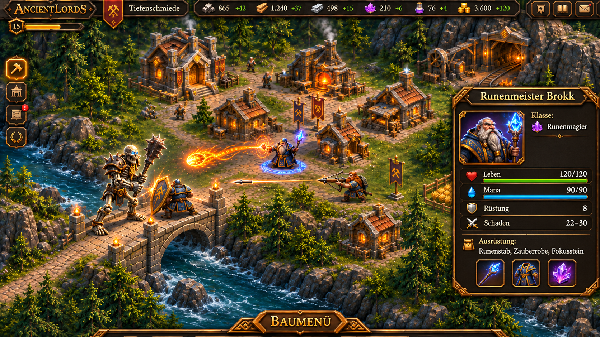

06 – Kampf
Wenn Untertanen auf gegnerische Untertanen, neutrale Monster oder Tiere treffen, kommt es zum Kampf. Jede Figur entscheidet selbst, ob sie kämpft, flieht, Verstärkung holt oder im Extremfall zur Gegenseite überläuft. Stellt sie sich dem Kampf, setzt sie ihre Fähigkeiten eigenständig ein. Der Alte Gott kann sie dabei nicht direkt steuern.

Figurenwerte
Zu den Figurenwerten zählen Mut, Lebenspunkte und Rüstung. Durch Erfahrung, Ausrüstung, Magie und Alchemie lassen sich diese Werte erheblich verbessern.
Tod und Rückkehr
Wenn eine Figur stirbt, verliert der Alte Gott einen seiner Untertanen. Er kann einen Teil seiner eigenen Kraft opfern, um sie zurückzuholen. Er wägt ab, ob ihm ihre Rückkehr dieses Opfer wert ist.
Wie ein Angriff entschieden wird
Erst entscheidet die Figur, ob sie kämpfen will. Ob ihr Angriff trifft und wie viel Schaden entsteht, entscheidet danach ein internes Würfelsystem. Die Detailvision nennt Das Schwarze Auge als Vergleich für die Abfolge von Angriff und Abwehr. Würfelgröße und Schwellenwerte sind noch offen.
- Angriff zulassen. Bei 100 % Müdigkeit kann ein Held nicht angreifen. Ein arkaner Angriff setzt außerdem voraus, dass der Held mindestens so viel Mana besitzt, wie der Zauber verlangt.
- Treffer prüfen. Im normalen Nah- und Fernkampf bestimmen Intuition und Fokus die Trefferchance. Bei einem arkanen Angriff sind Mystik und Intuition maßgeblich. Ein Fehlschlag verursacht keinen Schaden.
- Vollständige Abwehr prüfen. Einem normalen Treffer kann die Figur mit ihrem aus Intuition und Agilität bestimmten Ausweichwert entgehen. Gegen einen arkanen Treffer kann ihr Arkanwiderstand aus Glaube und Mystik die Wirkung vollständig verhindern.
- Schaden mindern. Durchdringt der Angriff die Abwehr, mindert der einschlägige Schutz den Schaden. Bei arkanem Schaden wirkt die Magieresistenz aus Glaube und Wut. Erst der verbleibende Schaden wird von den Lebenspunkten abgezogen. Welche Rolle die Rüstung bei einzelnen Schadensarten spielt, ist noch offen.
- Auf den Ausgang reagieren. Bleiben Lebenspunkte übrig, kann die Figur zum Gegenschlag ansetzen oder die Flucht versuchen. Bei null Lebenspunkten stirbt der Held an Ort und Stelle. Für die mögliche Rückkehr gilt das oben beschriebene Kraftopfer.
Stärke und Wut beeinflussen den Schaden mit einer Nahkampfwaffe. Agilität und Intuition bestimmen die Zahl der Angriffe pro Sekunde. Die Standhaftigkeit aus Wut und Glaube wirkt sich darauf aus, ob ein Held gegen stärkere Feinde oder eine zahlenmäßig überlegene Gruppe standhält.
Tod, Beute und Siegesgesten · aktueller Prototyp
Ein gefallener Held spielt zwei Sekunden lang seine Todesanimation. Die Leiche bleibt anschließend weitere zwei Sekunden liegen und wird dann zu einem Grabstein. Name, Klasse und Inventar bleiben für die Partie erhalten. Die eigentliche Wiederbelebung ist noch nicht implementiert.
Ein getötetes Monster wird nach zwei Sekunden Todesbewegung zur Beutetruhe. Ein Held kniet zwei Sekunden zum Plündern nieder; erst danach werden Gold und gegebenenfalls eine Waffe verbucht und die Truhe entfernt. Tod oder ein naher neuer Gegner unterbrechen das Plündern ohne Auszahlung. Noch ungeriggte Kreaturen verwenden vorläufig eine einfache Umkippbewegung.
Nach einem Sieg über ein Monster ab Klasse 3 jubeln die beteiligten überlebenden Helden zwei Sekunden, sobald kein weiteres bewegliches Monster in Kampfnähe ist. Ein neuer Gegner unterbricht den Jubel. Klasse und Beutetabellen sind im Inspector konfigurierbar. Höhere Klassen erhalten im Test höhere Goldmengen und bessere Waffenchancen. Rüstungen fallen derzeit nicht aus Monstertruhen.